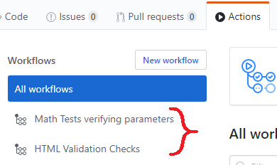
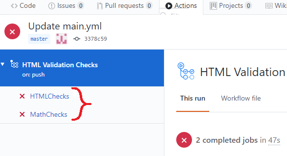
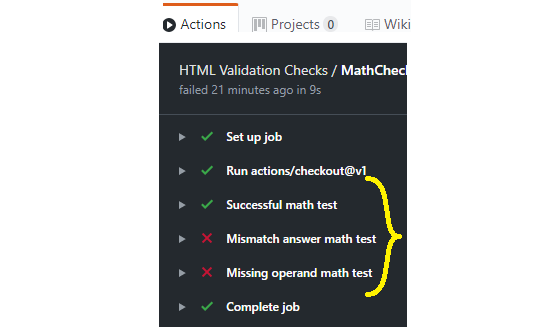
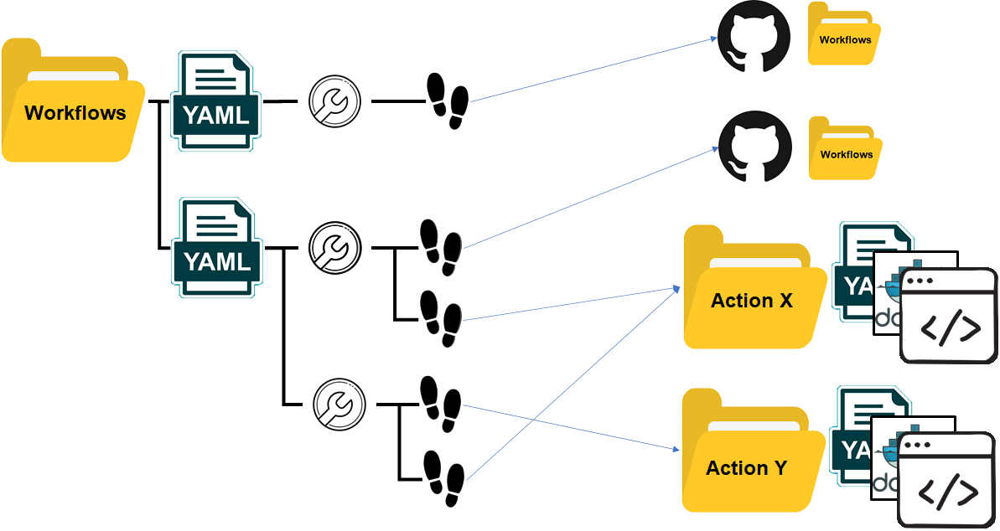

Instructions on how to create multiple actions
There are three means to create separate jobs on an event.
-
Create separate workflows - This requires
multiple yml files within the workflows folder.
Each of these yml files creates its own workflow.
Presumably this method is best used for workflows
that are brought about for different events. For
example, there might be one workflow for all commits
and another for merges.

-
Create separate jobs - This requires
multiple job IDs in the same workflow file. Each
of these jobs runs asynchronously in the cloud so
they can work through a variety of processes and
no one reduce throughput. Each job gets its own
pass/fail report. This technique appears to apply
best to different jobs that should be executed at
the same event.

-
Create multiple steps - This requires
multiple steps within a single job. These jobs
are tied together by success/failure. All successes
would be one branch. If there is a failure that
might abort all the rest. It is also possible
that there are failure steps to recover data.
Importantly, each step can refer to a different
action yml file.

By combining these three options one can define a
set of actions that take place in any number of
different permutations.
- A workflow can link to workflows in other projects.
- A workflow can link to another workflow in the same project.
- A workflow can link to multiple jobs, each with multiple steps.
- Each step in each job can point to any specific action.
- Each action contains a script that may well specify an unlimited number of actions.

Next actions:
- Create multiple workflows in the same project. Link A->C and B->C so that C is common.
- Create a workflow that allows a file to be created. Figure out how to create logs based on negative/positive test results.
- Create an action with multiple entrypoints (or some other mechanism) to accept input from external sources.
- Create your test mechanism to have several containers stood up and interact with each other.